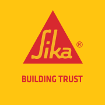
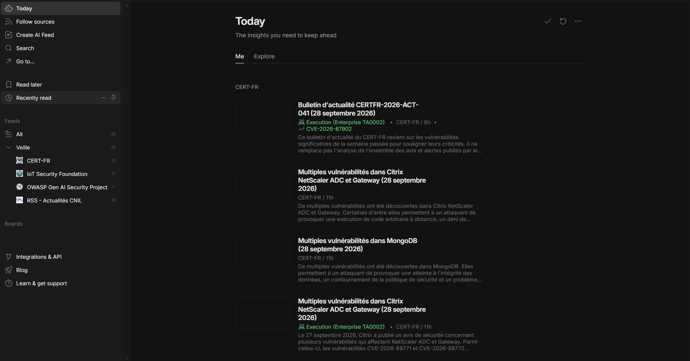

Profil
- NomKylian Grafeille Clément
- Âge19 ans
- LocalisationParis, France
- FormationBTS SIO option SISR
$ whoami
Alternant Support IT chez SIKA France
Le support informatique et les réseaux.
J'ai découvert le fonctionnement des ordinateurs en montant et démontant des tours PC. Des membres de ma famille qui travaillent dans le domaine m'ont également transmis cet intérêt.
Lycée Robert Schuman
Diplôme obtenu en 2025Lycée Robert Schuman · en alternance chez SIKA France
En coursPoursuite d'études possible. École et formation pas encore choisies.
EnvisagéTechnicien informatique
J'aime l'informatique, et plus particulièrement le support informatique et les réseaux.
L'option SISR (Solutions d'Infrastructure, Systèmes et Réseaux) est orientée vers les systèmes, les réseaux et les infrastructures informatiques : elle correspond directement à mon projet.
Je souhaite éventuellement poursuivre avec une licence professionnelle.

Activité principale : fabrication et développement de produits de spécialités chimiques pour le secteur du bâtiment.
Organisation : SIKA France est la filiale française du groupe suisse Sika. Elle s'organise autour d'une direction et de différents services, dont le service informatique, qui assure le bon fonctionnement du matériel, des logiciels et du réseau pour l'ensemble des collaborateurs. Compléter : principaux services / sites
Je suis intégré au service informatique.
J'interviens également auprès des autres services de l'entreprise pour leur apporter une assistance informatique.
Compétences développées grâce à ma formation et à mon alternance.
Bilan des deux années de BTS SIO option SISR.
Adressage IP, configuration et diagnostic réseau, Wi-Fi
Windows, Windows Server, Linux Debian
Assistance, diagnostic, résolution d'incidents
Active Directory, DHCP, DNS, gestion de parc
Bonnes pratiques et sécurisation des postes et du réseau
VMware, VirtualBox, Hyper-V, Packet Tracer
Collaboration avec le service informatique et les autres services
Prise en charge et suivi des demandes
Certification
Cisco Certified Network Associate
CertifiéLes outils que j'utilise.
Distribution Linux dédiée aux tests de sécurité
Gestion des utilisateurs, groupes et postes du domaine
Système des switchs et routeurs Cisco (configuration en ligne de commande)
Virtualisation de serveurs et de postes
Sujet
Les objets connectés (caméras, imprimantes, badgeuses, capteurs…) sont de plus en plus présents, dans les foyers comme dans les entreprises. Souvent mal sécurisés, ils peuvent devenir une porte d'entrée sur le réseau.
Ce sujet est directement lié au BTS SIO SISR et à mon projet professionnel : en tant que technicien support et réseaux, je dois savoir identifier et limiter ces risques.
Feedly est un agrégateur de flux RSS. Il regroupe au même endroit les articles publiés par mes sources, ce qui me permet de suivre rapidement l'actualité de mon sujet et de conserver les articles importants.

Des milliers de caméras et box utilisant des mots de passe par défaut ont été piratées pour mener une attaque DDoS massive, rendant inaccessibles de grands sites web.
Depuis le 1er août 2025, les équipements radio (objets connectés, Wi-Fi…) vendus dans l'UE doivent respecter des exigences de cybersécurité.
Règlement européen en vigueur depuis décembre 2024 : les produits connectés devront être sécurisés dès leur conception et mis à jour.
Depuis septembre 2026, les fabricants doivent signaler les vulnérabilités activement exploitées dans leurs produits.